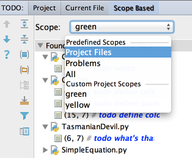

If you are working on a large project, with numerous TODO items, filter them by scopes.
Use the Scope-Based tab in the TODO tool window to show only those items that pertain to the scope of interest.
